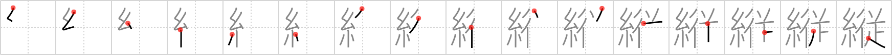

縦
← →
vertical

Reading:
On-Yomi: ジュウ — Kun-Yomi: たて
Heisig story:
Thread . . . accompany.
Koohii stories:
1) [Zactacular] 24-9-2007(208): When Spider-man does his amazing vertical wall climbing, a throng of photographers accompanies him to get a good shot of the action.
2) [cameron_en] 19-10-2008(90): You may only accompany spiderman if you're able to climb buildings vertically.
3) [gorgon] 14-2-2006(64): True vertical can be found by hanging a plumb line - a thread accompanied by a weight.
4) [torida] 26-5-2010(30): When Spider-Man goes vertical, it's very hard to accompany him.
5) [decamer0n] 28-5-2007(22): When you are facing a vertical climb, it is best to be accompanied by some good, strong thread.